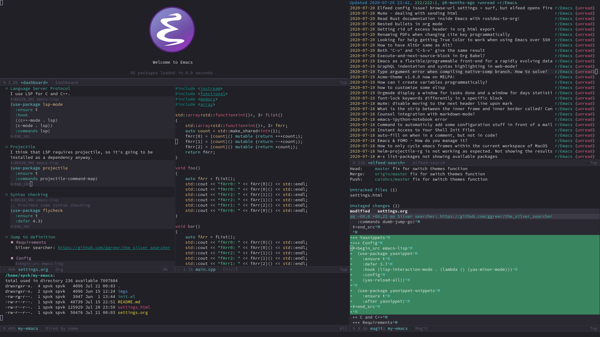

My Emacs configuration
My Emacs configuration

My configuration has around 100 packages installed. It loads fast, in my machine it takes around 0.8s but I don't care much about startup time since I never close my Emacs, so I haven't tried using advanced optimizations, all I do is defer some things with use-package.
I use the hydra package to configure my keybindings. There is a modal editing hydra on F1, a hydra for windows management (using Eyebrowse) on F2, a hydra for dumb-jump on F3, a hydra to open programs (e.g. the browser) on F4 and a hydra for Avy shorcuts on M-s. F5 switches between a light theme and a dark theme.
Installation
- Copy init.el and settings.org to ~/.emacs.d/
- Install all package requirements. For instance, C/C++ utilities requires clang.
Programming
Company
(use-package company :ensure t :commands company-mode :bind (:map company-active-map ("C-n" . 'company-select-next) ("C-p" . 'company-select-previous)) :init (use-package company-quickhelp :ensure t) :config (company-quickhelp-mode))
Language Server Protocol
I use LSP for C and C++.
(use-package lsp-mode :ensure t :hook ((c++-mode . lsp) (c-mode . lsp)) :commands lsp)
Projectile
I think that LSP requires projectile, so it's going to be installed as a dependency anyway.
(use-package projectile :ensure t :commands projectile-command-map)
Syntax checking
;; Provides some syntax checking (use-package flycheck :ensure t :defer 4.3)
Jump to definition
Requirements
Silver searcher: https://github.com/ggreer/the_silver_searcher
Config
(use-package dumb-jump :ensure t :config (setq dumb-jump-selector 'ivy) :commands dumb-jump-go)
Yasnippets
Config
(use-package yasnippet :ensure t :defer 3.7 :hook (lisp-interaction-mode . (lambda () (yas-minor-mode))) :config (yas-reload-all)) (use-package yasnippet-snippets :ensure t :after yasnippet)
C and C++
Requirements
- Requires clang installed on the system.
- Requires ccls installed on the system. https://github.com/MaskRay/ccls
I'm assuming that the ccls binary is at /usr/bin/ccls.
Config
;;; C/C++ (use-package cmake-ide :disabled :ensure t :config (cmake-ide-setup)) (use-package ccls :after lsp-mode :ensure t :config (setq ccls-executable "/usr/bin/ccls") :hook ((c-mode c++-mode objc-mode cuda-mode) . (lambda () (require 'ccls)))) (use-package company-lsp :ensure t :after (lsp-mode company) :commands company-lsp) (defun my-c-mode-common-hook () (c-set-offset 'substatement-open 0) (c-set-offset 'access-label '/) (c-set-offset 'inclass '+) (setq c-default-style "bsd" c-basic-offset 4 c-indent-level 4 c-indent-tabs-mode t c-tab-always-indent t c++-tab-always-indent t tab-width 4 backward-delete-function nil)) (add-hook 'c++-mode-common-hook 'my-c-mode-common-hook) (add-hook 'c-mode-common-hook 'my-c-mode-common-hook)
Golang
Requirements
Autocompletion requires gocode, available at https://github.com/nsf/gocode. We can install gocode with go get, then we need to create a symbolic link at /usr/bin.
Config
;; Requires gocode https://github.com/nsf/gocode ;; After installing gocode, we also have to create a symbolic link (use-package go-mode :ensure t :mode ("\\.go\\'" . go-mode) :config (use-package company-go :requires company :ensure t) (use-package go-errcheck :ensure t) (defun my-go-mode-hook () (setq tab-width 4) (setq gofmt-command "goimports") (set (make-local-variable 'company-backends) '(company-go)) (company-mode)) (add-hook 'go-mode-hook 'my-go-mode-hook))
Lisp
I use Steel Bank Common Lisp.
Config
;;; Lisp (use-package slime :ensure t :commands slime :config (setq inferior-lisp-program "sbcl") (setq slime-contribs '(slime-fancy))) (use-package slime-company :after (slime company) :ensure t :init (slime-setup '(slime-fancy slime-company))) (use-package suggest :ensure t :commands suggest)
HTML
(use-package emmet-mode :ensure t :mode ("\\.html\\'" . emmet-mode)) (use-package rainbow-mode :ensure t :hook (org-mode . (lambda () (rainbow-mode))) :mode (("\\.html\\'" . rainbow-mode) ("\\.css\\'" . rainbow-mode))) (use-package web-mode :ensure t :mode (("\\.html\\'" . web-mode) ("\\.css\\'" . web-mode)))
Yaml
I left the Yaml package disabled, so delete the :disabled line if you want this package.
(use-package yaml-mode :disabled :ensure t :mode ("\\.yml\\'" . yaml-mode))
Docker
I left the Docker packages disabled, so delete the :disabled line if you want these packages.
(use-package docker :disabled :ensure t :commands docker) (use-package dockerfile-mode :disabled :ensure t :mode ("Dockerfile\\'" . dockerfile-mode))
Dashboard
(use-package dashboard :ensure t :init (setq initial-buffer-choice (lambda () (get-buffer "*dashboard*"))) :config ;; Dashboard requirements. (use-package page-break-lines :ensure t) (use-package all-the-icons :ensure t) ;; Dashboard configuration. (dashboard-setup-startup-hook) (setq dashboard-banner-logo-title "Welcome to Emacs") (setq dashboard-startup-banner 'logo) (setq dashboard-items '((recents . 5) (agenda . 5))) (setq dashboard-set-init-info t) (setq dashboard-set-heading-icons t) (setq dashboard-set-file-icons t) ;; adds a clock (defun dashboard-insert-custom (list-size) (defun string-centralized (str) (let* ((indent (concat "%" (number-to-string (/ (- (window-body-width) (string-width str)) 2)) "s")) (str (concat indent str indent))) (format str " " " "))) (insert (propertize (string-centralized (format-time-string "%a %d %b %Y" (current-time))) 'font-lock-face '('bold :foreground "#6c4c7b"))) (newline) (insert (propertize (string-centralized (format-time-string "%H:%M" (current-time))) 'font-lock-face '('bold :foreground "#6c4c7b")))) (add-to-list 'dashboard-item-generators '(custom . dashboard-insert-custom)) (add-to-list 'dashboard-items '(custom) t) (defun test-dashboard () (setq *my-timer* (run-at-time "20 sec" nil #'(lambda () (when *my-timer* (cancel-timer *my-timer*) (setq *my-timer* nil)) (when (string= (buffer-name (window-buffer)) "*dashboard*") (dashboard-refresh-buffer)))))) (add-hook 'dashboard-mode-hook #'test-dashboard))
Org
Config
;;; org (use-package org :ensure t :mode ("\\.org\\'" . org-mode) :diminish org-indent-mode :config (setq org-startup-indented t) (org-babel-do-load-languages 'org-babel-load-languages '((python . t) (emacs-lisp . t) (lisp . t) (C . t)))) (use-package org-bullets :after org :ensure t :config (add-hook 'org-mode-hook (lambda () (org-bullets-mode))))
Exporting
;; Export to html with syntax highlighting (use-package htmlize :after org :ensure t :commands org-export-dispatch) ;; Export to Markdown with syntax highlighting (use-package ox-gfm :after org :ensure t :commands org-gfm-export-to-markdown)
Presentations
- Requirements
Requires reveal.js to create html presentations.
- Config
;; Package used to create presentations using reveal.js. ;; Requires the installation of reveaj.js. (use-package ox-reveal :after org :ensure t :commands org-reveal-export-to-html :config (setq org-reveal-root "file:///home/spvk/notes/presentations/reveal.js"))
Magit
(use-package magit :ensure t :defer 9.2) (global-set-key (kbd "\C-x g") 'magit-status)
Theme
My favorite themes packages are zerodark-theme, kaolin-themes, moe-theme and dracula-theme.
;; zerodark-theme kaolin-themes moe-theme dracula-theme are nice themes (use-package kaolin-themes :ensure t) (use-package doom-themes :ensure t) (setq *theme-dark* 'kaolin-galaxy) (setq *theme-light* 'doom-acario-light) (setq *current-theme* *theme-dark*) (defun my-fn/next-theme (theme) (disable-theme *current-theme*) (load-theme theme t) (powerline-reset) (setq *current-theme* theme)) (defun my-fn/toggle-theme () (interactive) (cond ((eq *current-theme* *theme-dark*) (my-fn/next-theme *theme-light*)) ((eq *current-theme* *theme-light*) (my-fn/next-theme *theme-dark*)))) (global-set-key (kbd "<f5>") #'my-fn/toggle-theme)
Treemacs
(use-package treemacs :ensure t :commands treemacs)
Password manager
Requires pass.
(use-package pass :ensure t :commands pass)
Global
Hydra

(use-package hydra :ensure t :defer 2.5 :config (defhydra hydra-wind-move (:color amaranth :hint nil :post hydra-movement/cond-body-call) " _b_: left wind _p_: up wind _f_: right wind _n_: down wind " ("q" nil "quit") ("<f3>" nil "quit") ("b" windmove-left) ("f" windmove-right) ("p" windmove-up) ("n" windmove-down)) (defhydra hydra-exwm (:color teal :hint nil) " _b_:rave _t_:erminal " ("q" nil "quit") ("<f4>" nil "quit") ("b" (exwm-async-run "brave-browser")) ("t" (exwm-async-run "alacritty"))) (global-set-key (kbd "<f4>") 'hydra-exwm/body) (defhydra hydra-dumb-jump (:color teal :columns 3) "Dumb Jump" ("q" nil "quit") ("<f3>" nil "quit") ("j" dumb-jump-go "Go") ("o" dumb-jump-go-other-window "Other window") ("e" dumb-jump-go-prefer-external "Go external") ("x" dumb-jump-go-prefer-external-other-window "Go external other window") ("i" dumb-jump-go-prompt "Prompt") ("l" dumb-jump-quick-look "Quick look") ("b" dumb-jump-back "Back")) (global-set-key (kbd "<f3>") 'hydra-dumb-jump/body) (defhydra hydra-multiple-cursors (:color teal :hint nil :post hydra-movement/cond-body-call) " _l_: edit lines _a_: all like this " ("q" nil "quit") ("l" mc/edit-lines) ("a" mc/mark-all-like-this)) (defhydra hydra-eyebrowse (:color amaranth :hint nil) " %s(eyebrowse-mode-line-indicator) _p_: prev wind _c_: creat wind _r_: renam wind _n_: next wind _C_: close wind _l_: last wind _0_: switch to 0 ^^... _9_: switch to 9 " ("q" nil "quit") ("<f2>" nil "quit") ("p" eyebrowse-prev-window-config nil) ("n" eyebrowse-next-window-config nil) ("l" eyebrowse-last-window-config nil) ("r" eyebrowse-rename-window-config nil) ("c" eyebrowse-create-window-config nil) ("C" eyebrowse-close-window-config nil) ("0" eyebrowse-switch-to-window-config-0 nil) ("1" eyebrowse-switch-to-window-config-1 nil) ("2" eyebrowse-switch-to-window-config-2 nil) ("3" eyebrowse-switch-to-window-config-3 nil) ("4" eyebrowse-switch-to-window-config-4 nil) ("5" eyebrowse-switch-to-window-config-5 nil) ("6" eyebrowse-switch-to-window-config-6 nil) ("7" eyebrowse-switch-to-window-config-7 nil) ("8" eyebrowse-switch-to-window-config-8 nil) ("9" eyebrowse-switch-to-window-config-9 nil)) (global-set-key (kbd "<f2>") 'hydra-eyebrowse/body) (defhydra hydra-avy (:color teal :hint nil :post hydra-movement/cond-body-call) " _s_: word 1 _n_: word bellow _p_: word above _l_: line _c_: char timer _g_: char timer " ("q" nil "quit") ("s" avy-goto-word-1) ("p" avy-goto-word-1-above) ("n" avy-goto-word-1-below) ("l" avy-goto-line) ("c" avy-goto-char-timer) ("g" avy-goto-char-timer)) (global-set-key (kbd "M-s") 'hydra-avy/body) ;;; hydra-movement to make moving around easier (defun hydra-movement/cond-body-call () (if hydra-movement/inside-body (hydra-movement/call-body))) (setq hydra-movement/inside-body nil) (defun hydra-movement/call-body () (interactive) (set-cursor-color "#ff0000") (setq hydra-is-helpful nil) (setq hydra-movement/inside-body t) (hydra-movement/body)) (defun hydra-call/hydra-modal-operators (operator) (setq hydra-call-operators/operator operator) (setq hydra-call-operators/repeat nil) (setq hydra-call-operators/backwards nil) (setq hydra-call-operators/inside nil) (setq hydra-call-operators/until nil) (hydra-modal-operators/body)) (defhydra hydra-modal-operators (:color blue :hint nil :post hydra-movement/cond-body-call) " _b_:ackwards _w_:ord _l_:ine _p_:aragraph _r_:egion _u_:ntil _i_:nside " ("b" (setq hydra-call-operators/backwards t) :color red) ("i" (progn (call-interactively (lambda (arg) (interactive "c") (setq hydra-call-operators/inside arg))) (funcall hydra-call-operators/operator 'another))) ("u" (progn (call-interactively (lambda (arg) (interactive "c") (setq hydra-call-operators/until arg))) (funcall hydra-call-operators/operator 'another))) ("w" (funcall hydra-call-operators/operator 'word)) ("l" (funcall hydra-call-operators/operator 'line)) ("p" (funcall hydra-call-operators/operator 'paragraph)) ("r" (funcall hydra-call-operators/operator 'region)) ("0" (setq hydra-call-operators/repeat (concat hydra-call-operators/repeat "0")) :color red) ("1" (setq hydra-call-operators/repeat (concat hydra-call-operators/repeat "1")) :color red) ("2" (setq hydra-call-operators/repeat (concat hydra-call-operators/repeat "2")) :color red) ("3" (setq hydra-call-operators/repeat (concat hydra-call-operators/repeat "3")) :color red) ("4" (setq hydra-call-operators/repeat (concat hydra-call-operators/repeat "4")) :color red) ("5" (setq hydra-call-operators/repeat (concat hydra-call-operators/repeat "5")) :color red) ("6" (setq hydra-call-operators/repeat (concat hydra-call-operators/repeat "6")) :color red) ("7" (setq hydra-call-operators/repeat (concat hydra-call-operators/repeat "7")) :color red) ("8" (setq hydra-call-operators/repeat (concat hydra-call-operators/repeat "8")) :color red) ("9" (setq hydra-call-operators/repeat (concat hydra-call-operators/repeat "9")) :color red)) (defhydra hydra-indentation (:color blue :hint nil :post hydra-movement/cond-body-call) " Hydra for indentation _c_:C _l_:Lisp " ("q" nil "quit") ("l" indent-sexp) ("c" c-indent-defun)) (defun current-line-blank-p () (interactive) (string-match-p "\\`$" (thing-at-point 'line))) (defun navigate-to-specific-char (char &optional increment) (or increment (setq increment 1)) (let ((tmp-pos (point))) (while (not (= char (char-after tmp-pos))) (setq tmp-pos (+ increment tmp-pos))) (goto-char tmp-pos))) (defun hydra-modal-operator/mark (operand) (let ((times (if (not hydra-call-operators/repeat) 1 (string-to-number hydra-call-operators/repeat)))) (cond ((eq 'another operand) (cond (hydra-call-operators/until (call-interactively 'set-mark-command) (if hydra-call-operators/backwards (navigate-to-specific-char hydra-call-operators/until -1) (navigate-to-specific-char hydra-call-operators/until +1))) (hydra-call-operators/inside (cond ((= hydra-call-operators/inside ?w) (backward-word) (call-interactively 'set-mark-command) (mark-word)) ((member hydra-call-operators/inside '(?\" ?' ?` ?\ ?* ?\\ ?/)) (navigate-to-specific-char hydra-call-operators/inside -1) (forward-char 1) (call-interactively 'set-mark-command) (navigate-to-specific-char hydra-call-operators/inside 1)) (t (funcall #'(lambda (arg) (let ((delimiters `((,?( ,?)) (,?< ,?>) (,?{ ?}) (,?[ ?])))) (while delimiters (let ((del-pair (pop delimiters))) (when (member arg del-pair) (navigate-to-specific-char (car del-pair) -1) (forward-char 1) (call-interactively 'set-mark-command) (navigate-to-specific-char (cadr del-pair) 1)))))) hydra-call-operators/inside)))))) ((eq 'line operand) (cond (hydra-call-operators/backwards (end-of-visual-line) (call-interactively 'set-mark-command) (previous-line (1- times)) (beginning-of-visual-line)) (t (beginning-of-visual-line) (call-interactively 'set-mark-command) (next-line (1- times)) (end-of-visual-line)))) ((eq 'word operand) (call-interactively 'set-mark-command) (if hydra-call-operators/backwards (backward-word times) (forward-word times)))))) (defun hydra-modal-operator/delete (operand) (interactive) (cond ((eq 'line operand) (if (and (current-line-blank-p) (not hydra-call-operators/repeat) (string= hydra-call-operators/repeat "1")) (kill-line) (hydra-modal-operator/mark operand) (delete-region (region-beginning) (region-end)) (kill-line))) ((or hydra-call-operators/until hydra-call-operators/inside) (hydra-modal-operator/mark 'another) (delete-forward-char 1)) (t (hydra-modal-operator/mark operand) (delete-forward-char 1)))) (defun hydra-modal-operator/cut (operand) (interactive) (cond ((eq 'line operand) (if (and (current-line-blank-p) (not hydra-call-operators/repeat) (string= hydra-call-operators/repeat "1")) (kill-line) (hydra-modal-operator/mark operand) (kill-region -1 -1 t) (kill-line))) ((or hydra-call-operators/until hydra-call-operators/inside) (hydra-modal-operator/mark 'another) (kill-region -1 -1 t)) (t (hydra-modal-operator/mark operand) (kill-region -1 -1 t)))) (defun hydra-modal-operator/copy (operand) (interactive) (cond ((eq 'line operand) (unless (and (current-line-blank-p) (not hydra-call-operators/repeat) (string= hydra-call-operators/repeat "1")) (hydra-modal-operator/mark operand) (let ((str (buffer-substring (region-beginning) (region-end)))) (remove-text-properties 0 (length str) '(read-only t) str) (kill-new str t)) (deactivate-mark))) ((eq 'region operand) (let ((str (buffer-substring (region-beginning) (region-end)))) (remove-text-properties 0 (length str) '(read-only t) str) (kill-new str t)) (deactivate-mark)) ((or hydra-call-operators/until hydra-call-operators/inside) (hydra-modal-operator/mark 'another) (let ((str (buffer-substring (region-beginning) (region-end)))) (remove-text-properties 0 (length str) '(read-only t) str) (kill-new str t)) (deactivate-mark)) (t (hydra-modal-operator/mark operand) (let ((str (buffer-substring (region-beginning) (region-end)))) (remove-text-properties 0 (length str) '(read-only t) str) (kill-new str t)) (deactivate-mark)))) (defun hydra-modal-operator/case (operand) (interactive) (hydra-modal-operator/mark operand) (let ((hydra-case-arg nil)) (call-interactively #'(lambda (arg) (interactive "c") (setq hydra-case-arg arg))) (cond ((= hydra-case-arg ?u) (upcase-region (region-beginning) (region-end))) ((= hydra-case-arg ?d) (downcase-region (region-beginning) (region-end))) ((= hydra-case-arg ?c) (capitalize-region (region-beginning) (region-end)))))) (defhydra hydra-movement (:hint nil :color amaranth :post (progn (set-cursor-color "#000000") (setq hydra-is-helpful t))) " Navigation: _f_: forward _b_: backward _F_: forward word _B_: backward word _n_: next line _p_: prev line _v_: page down _V_: page up _a_: beg line _e_: end line _<_: beg buffer _>_: end buffer _s_: save pos _j_: jump pos _g_: avy hydra _S_: swiper _C-n_: in sexp _C-p_: out sexp _C-f_: forw sexp _C-b_: back sexp Edition: _y_: popup yank _Y_: yank _i_: insert _u_: undo _C-s_: save buffer _=_: exp region _M_: MC hydra _r_: copy regis _I_: insert regis _<DEL>_: del _<SPC>_: set mark _<tab>_: ind hydra _<return>_: newline Operators: _m_: mark _d_: delete _w_: cut _W_: copy _c_: case " ("<f1>" (setq hydra-movement/inside-body nil) :exit t) ("q" (setq hydra-movement/inside-body nil) :exit t) ("h" (setq hydra-is-helpful (not hydra-is-helpful))) ("o" (progn (end-of-line) (newline))) ("F" forward-word) ("B" backward-word) ("C-f" forward-sexp) ("C-b" backward-sexp) ("C-n" down-list) ("C-p" backward-up-list) ("M-f" counsel-find-file) ("P" (move-to-window-line 0)) ("n" next-line) ("N" (move-to-window-line -1)) ("p" previous-line) ("+" (enlarge-window 1)) ("-" (enlarge-window -1)) ("s" (point-to-register ?g)) ("j" (jump-to-register ?g)) ("G" (lambda (arg) (interactive "cInsert char:") (navigate-to-specific-char arg))) ("W" (hydra-call/hydra-modal-operators 'hydra-modal-operator/copy) :exit t) ("<SPC>" set-mark-command) ("y" popup-kill-ring) ("Y" yank) ("<tab>" hydra-indentation/body :exit t) ("v" scroll-up) ("c" (hydra-call/hydra-modal-operators 'hydra-modal-operator/case) :exit t) ("V" scroll-down) ("l" recenter-top-bottom) ("L" (move-to-window-line (/ (window-height) 2))) ("a" beginning-of-line) ("r" (lambda (arg) (interactive "cChoose a register:") (copy-to-register arg 1 1 nil t))) ("e" end-of-line) ("C-e" eval-last-sexp) ("f" (when (= (skip-syntax-forward "-") 0) (forward-char 1))) ("b" (when (= (skip-syntax-backward "-") 0) (backward-char 1))) ("g" hydra-avy/body :exit t) ("I" (lambda (arg) (interactive "cChoose a register:") (insert-register arg))) ("i" (lambda (txt) (interactive "sQuick insertion:") (insert txt))) ("=" er/expand-region) ("m" (hydra-call/hydra-modal-operators 'hydra-modal-operator/mark) :exit t) ("M" hydra-multiple-cursors/body :exit t) ("U" universal-argument) ("S" swiper) ("C-s" save-buffer) ("<" beginning-of-buffer) (">" end-of-buffer) ("u" undo) ("<return>" newline) ("<DEL>" delete-backward-char) ("<deletechar>" delete-forward-char) ("M-w" ace-window) ("d" (hydra-call/hydra-modal-operators 'hydra-modal-operator/delete) :exit t) ("w" (hydra-call/hydra-modal-operators 'hydra-modal-operator/cut) :exit t)) (global-set-key (kbd "C-!") 'hydra-movement/call-body) (global-set-key (kbd "<f1>") 'hydra-movement/call-body))
Ivy
;;; Global ;; Ivy is a generic completion tool (use-package ivy :ensure t :diminish ivy-mode :defer 0.9 :config (use-package swiper :ensure t :bind (("\C-s" . swiper))) (use-package counsel :ensure t :diminish counsel-mode :config (counsel-mode)) (ivy-mode))
Regular expressions
(use-package visual-regexp-steroids :ensure t :commands vr/replace)
Kill ring
(use-package popup-kill-ring :ensure t :bind (("M-y" . popup-kill-ring)))
EXWM
(use-package exwm :ensure t :config (require 'exwm-config) (exwm-config-default) ;(exwm-enable) (require 'exwm-randr) ;(exwm-randr-enable) (setq exwm-randr-workspace-output-plist '(0 "eDP-1" 1 "HDMI-1")) (add-hook 'exwm-randr-screen-change-hook (lambda () (start-process-shell-command "xrandr" nil "xrandr --output eDP-1 --right-of HDMI-1 --auto"))) (exwm-randr-enable) ; ;(exwm-enable) (defun exwm-async-run (name) (start-process name nil name)) (dolist (k '(XF86AudioLowerVolume XF86AudioRaiseVolume XF86PowerOff XF86AudioMute XF86AudioPlay XF86AudioStop XF86AudioPrev XF86AudioNext XF86ScreenSaver XF68Back XF86Forward Scroll_Lock print)) (cl-pushnew k exwm-input-prefix-keys)) (global-set-key (kbd "<XF86AudioRaiseVolume>") (lambda () (interactive) (call-process-shell-command "amixer set Master 10%+" nil 0))) (global-set-key (kbd "<XF86AudioLowerVolume>") (lambda () (interactive) (call-process-shell-command "amixer set Master 10%-" nil 0))) (global-set-key (kbd "<XF86AudioMute>") (lambda () (interactive) (call-process-shell-command "amixer set Master toggle" nil 0))) (global-set-key (kbd "<print>") (lambda () (interactive) (call-process-shell-command "flameshot gui" nil 0))) (exwm-input-set-simulation-keys '( ;; cut/paste ([?\C-w] . ?\C-x) ([?\M-w] . ?\C-c) ([?\C-y] . ?\C-v) ;; search ([?\C-s] . ?\C-f))))
Modeline
(display-time-mode t) (use-package spaceline :ensure t :defer 2.2 :config (require 'spaceline-config) (setq powerline-default-separator (quote arrow)) (setq spaceline-line-column-p nil) (setq spaceline-buffer-size nil) (setq spaceline-workspace-numbers-unicode t) (setq spaceline-buffer-encoding-abbrev-p nil) (spaceline-spacemacs-theme))
Parentheses
(use-package smartparens :ensure t :defer 5.1 :diminish smartparens-mode :config (smartparens-global-mode) (sp-local-pair 'org-mode "*" "*") (sp-local-pair 'org-mode "_" "_")) (use-package highlight-parentheses :ensure t :defer 12.1 :diminish highlight-parentheses-mode :config (global-highlight-parentheses-mode)) (defvar show-paren-delay 0) (show-paren-mode t)
Buffer moving
(use-package buffer-move :ensure t :bind (("C-c <C-up>" . buf-move-up) ("C-c <C-down>" . buf-move-down) ("C-c <C-left>" . buf-move-left) ("C-c <C-right>" . buf-move-right)))
Windows moving
(global-set-key (kbd "C-c <M-up>") 'windmove-up) (global-set-key (kbd "C-c <M-down>") 'windmove-down) (global-set-key (kbd "C-c <M-right>") 'windmove-right) (global-set-key (kbd "C-c <M-left>") 'windmove-left) (use-package ace-window :ensure t :commands ace-window)
Multiple cursors
(use-package multiple-cursors :ensure t :bind (("C-: C-m b" . mc/edit-lines) ("C-: C-m a" . mc/mark-all-like-this) ("C-: C-m >" . mc/mark-next-like-this) ("C-: C-m <" . mc/mark-previous-like-this)))
Avy
(use-package avy :ensure t :commands hydra-avy/body)
Undo-tree
(use-package undo-tree :ensure t :defer 4.2 :diminish undo-tree-mode :config (global-undo-tree-mode))
Dired
(use-package dired :hook (dired-mode . (lambda () (dired-omit-mode))) :bind (:map dired-mode-map ("<return>" . dired-find-alternate-file))) (use-package dired-x :config (setq dired-omit-verbose nil) (setq dired-omit-files "^\\..+$")) (use-package dired-rainbow :ensure t :defer 3.2 :config (progn (dired-rainbow-define-chmod directory "#6cb2eb" "d.*") (dired-rainbow-define html "#eb5286" ("css" "less" "sass" "scss" "htm" "html" "jhtm" "mht" "eml" "mustache" "xhtml")) (dired-rainbow-define xml "#f2d024" ("xml" "xsd" "xsl" "xslt" "wsdl" "bib" "json" "msg" "pgn" "rss" "yaml" "yml" "rdata")) (dired-rainbow-define document "#9561e2" ("docm" "doc" "docx" "odb" "odt" "pdb" "pdf" "ps" "rtf" "djvu" "epub" "odp" "ppt" "pptx")) (dired-rainbow-define markdown "#ffed4a" ("org" "etx" "info" "markdown" "md" "mkd" "nfo" "pod" "rst" "tex" "textfile" "txt")) (dired-rainbow-define database "#6574cd" ("xlsx" "xls" "csv" "accdb" "db" "mdb" "sqlite" "nc")) (dired-rainbow-define media "#de751f" ("mp3" "mp4" "MP3" "MP4" "avi" "mpeg" "mpg" "flv" "ogg" "mov" "mid" "midi" "wav" "aiff" "flac")) (dired-rainbow-define image "#f66d9b" ("tiff" "tif" "cdr" "gif" "ico" "jpeg" "jpg" "png" "psd" "eps" "svg")) (dired-rainbow-define log "#c17d11" ("log")) (dired-rainbow-define shell "#f6993f" ("awk" "bash" "bat" "sed" "sh" "zsh" "vim")) (dired-rainbow-define interpreted "#38c172" ("py" "ipynb" "rb" "pl" "t" "msql" "mysql" "pgsql" "sql" "r" "clj" "cljs" "scala" "js")) (dired-rainbow-define compiled "#4dc0b5" ("asm" "cl" "lisp" "el" "c" "h" "c++" "h++" "hpp" "hxx" "m" "cc" "cs" "cp" "cpp" "go" "f" "for" "ftn" "f90" "f95" "f03" "f08" "s" "rs" "hi" "hs" "pyc" ".java")) (dired-rainbow-define executable "#8cc4ff" ("exe" "msi")) (dired-rainbow-define compressed "#51d88a" ("7z" "zip" "bz2" "tgz" "txz" "gz" "xz" "z" "Z" "jar" "war" "ear" "rar" "sar" "xpi" "apk" "xz" "tar")) (dired-rainbow-define packaged "#faad63" ("deb" "rpm" "apk" "jad" "jar" "cab" "pak" "pk3" "vdf" "vpk" "bsp")) (dired-rainbow-define encrypted "#ffed4a" ("gpg" "pgp" "asc" "bfe" "enc" "signature" "sig" "p12" "pem")) (dired-rainbow-define fonts "#6cb2eb" ("afm" "fon" "fnt" "pfb" "pfm" "ttf" "otf")) (dired-rainbow-define partition "#e3342f" ("dmg" "iso" "bin" "nrg" "qcow" "toast" "vcd" "vmdk" "bak")) (dired-rainbow-define vc "#0074d9" ("git" "gitignore" "gitattributes" "gitmodules")) (dired-rainbow-define-chmod executable-unix "#38c172" "-.*x.*")))
Tabs
(use-package centaur-tabs :ensure t :defer 4.2)
Windows management
(use-package eyebrowse :ensure t :commands hydra-eyebrowse/body :config (eyebrowse-mode t))
Smart region expanding
(use-package expand-region :ensure t :bind (("C-=" . er/expand-region)))
Tool bar, menu bar, line numbering etc
;;; Variables (global-visual-line-mode) (menu-bar-mode -1) (tool-bar-mode -1) (scroll-bar-mode -1) (global-set-key (kbd "TAB") 'self-insert-command) (global-set-key (kbd "\C-c h") 'highlight-symbol-at-point) (setq visible-bell 1)
Change backup/autosave folder
;;; Change the backup/autosave folder. (defvar backup-dir (expand-file-name "~/.emacs.d/backup/")) (defvar autosave-dir (expand-file-name "~/.emacs.d/autosave/")) (setq backup-directory-alist (list (cons ".*" backup-dir))) (setq auto-save-list-file-prefix autosave-dir) (setq auto-save-file-name-transforms `((".*" ,autosave-dir t)))
Read process output
Sets read-process-output-max to 1mb since the default is low. This should improve things that use servers like LSP.
(setq read-process-output-max (* 1024 1024))
Spell checking
I use aspell for spell checking.
Config
(defvar ispell-program-name "aspell")
Diminish
I use aspell for spell checking.
Config
(diminish 'visual-line-mode) (diminish 'auto-revert-mode) (diminish 'eldoc-mode)
Change sexp keyword indentation
This changes the identation style from:
(defhydra foo (:color blue :help nil))
to:
(defhydra foo (:color blue :help nil))
Code from https://emacs.stackexchange.com/questions/10230/how-to-indent-keywords-aligned posted by the user Aquaactress.
(advice-add #'calculate-lisp-indent :override #'void~calculate-lisp-indent) (defun void~calculate-lisp-indent (&optional parse-start) "Add better indentation for quoted and backquoted lists." ;; This line because `calculate-lisp-indent-last-sexp` was defined with `defvar` ;; with it's value ommited, marking it special and only defining it locally. So ;; if you don't have this, you'll get a void variable error. (defvar calculate-lisp-indent-last-sexp) (save-excursion (beginning-of-line) (let ((indent-point (point)) state ;; setting this to a number inhibits calling hook (desired-indent nil) (retry t) calculate-lisp-indent-last-sexp containing-sexp) (cond ((or (markerp parse-start) (integerp parse-start)) (goto-char parse-start)) ((null parse-start) (beginning-of-defun)) (t (setq state parse-start))) (unless state ;; Find outermost containing sexp (while (< (point) indent-point) (setq state (parse-partial-sexp (point) indent-point 0)))) ;; Find innermost containing sexp (while (and retry state (> (elt state 0) 0)) (setq retry nil) (setq calculate-lisp-indent-last-sexp (elt state 2)) (setq containing-sexp (elt state 1)) ;; Position following last unclosed open. (goto-char (1+ containing-sexp)) ;; Is there a complete sexp since then? (if (and calculate-lisp-indent-last-sexp (> calculate-lisp-indent-last-sexp (point))) ;; Yes, but is there a containing sexp after that? (let ((peek (parse-partial-sexp calculate-lisp-indent-last-sexp indent-point 0))) (if (setq retry (car (cdr peek))) (setq state peek))))) (if retry nil ;; Innermost containing sexp found (goto-char (1+ containing-sexp)) (if (not calculate-lisp-indent-last-sexp) ;; indent-point immediately follows open paren. ;; Don't call hook. (setq desired-indent (current-column)) ;; Find the start of first element of containing sexp. (parse-partial-sexp (point) calculate-lisp-indent-last-sexp 0 t) (cond ((looking-at "\\s(") ;; First element of containing sexp is a list. ;; Indent under that list. ) ((> (save-excursion (forward-line 1) (point)) calculate-lisp-indent-last-sexp) ;; This is the first line to start within the containing sexp. ;; It's almost certainly a function call. (if (or ;; Containing sexp has nothing before this line ;; except the first element. Indent under that element. (= (point) calculate-lisp-indent-last-sexp) ;; First sexp after `containing-sexp' is a keyword. This ;; condition is more debatable. It's so that I can have ;; unquoted plists in macros. It assumes that you won't ;; make a function whose name is a keyword. (when-let (char-after (char-after (1+ containing-sexp))) (char-equal char-after ?:)) ;; Check for quotes or backquotes around. (let* ((positions (elt state 9)) (last (car (last positions))) (rest (reverse (butlast positions))) (any-quoted-p nil) (point nil)) (or (when-let (char (char-before last)) (or (char-equal char ?') (char-equal char ?`))) (progn (while (and rest (not any-quoted-p)) (setq point (pop rest)) (setq any-quoted-p (or (when-let (char (char-before point)) (or (char-equal char ?') (char-equal char ?`))) (save-excursion (goto-char (1+ point)) (looking-at-p "\\(?:back\\)?quote[\t\n\f\s]+("))))) any-quoted-p)))) ;; Containing sexp has nothing before this line ;; except the first element. Indent under that element. nil ;; Skip the first element, find start of second (the first ;; argument of the function call) and indent under. (progn (forward-sexp 1) (parse-partial-sexp (point) calculate-lisp-indent-last-sexp 0 t))) (backward-prefix-chars)) (t ;; Indent beneath first sexp on same line as ;; `calculate-lisp-indent-last-sexp'. Again, it's ;; almost certainly a function call. (goto-char calculate-lisp-indent-last-sexp) (beginning-of-line) (parse-partial-sexp (point) calculate-lisp-indent-last-sexp 0 t) (backward-prefix-chars))))) ;; Point is at the point to indent under unless we are inside a string. ;; Call indentation hook except when overridden by lisp-indent-offset ;; or if the desired indentation has already been computed. (let ((normal-indent (current-column))) (cond ((elt state 3) ;; Inside a string, don't change indentation. nil) ((and (integerp lisp-indent-offset) containing-sexp) ;; Indent by constant offset (goto-char containing-sexp) (+ (current-column) lisp-indent-offset)) ;; in this case calculate-lisp-indent-last-sexp is not nil (calculate-lisp-indent-last-sexp (or ;; try to align the parameters of a known function (and lisp-indent-function (not retry) (funcall lisp-indent-function indent-point state)) ;; If the function has no special alignment ;; or it does not apply to this argument, ;; try to align a constant-symbol under the last ;; preceding constant symbol, if there is such one of ;; the last 2 preceding symbols, in the previous ;; uncommented line. (and (save-excursion (goto-char indent-point) (skip-chars-forward " \t") (looking-at ":")) ;; The last sexp may not be at the indentation ;; where it begins, so find that one, instead. (save-excursion (goto-char calculate-lisp-indent-last-sexp) ;; Handle prefix characters and whitespace ;; following an open paren. (Bug#1012) (backward-prefix-chars) (while (not (or (looking-back "^[ \t]*\\|([ \t]+" (line-beginning-position)) (and containing-sexp (>= (1+ containing-sexp) (point))))) (forward-sexp -1) (backward-prefix-chars)) (setq calculate-lisp-indent-last-sexp (point))) (> calculate-lisp-indent-last-sexp (save-excursion (goto-char (1+ containing-sexp)) (parse-partial-sexp (point) calculate-lisp-indent-last-sexp 0 t) (point))) (let ((parse-sexp-ignore-comments t) indent) (goto-char calculate-lisp-indent-last-sexp) (or (and (looking-at ":") (setq indent (current-column))) (and (< (line-beginning-position) (prog2 (backward-sexp) (point))) (looking-at ":") (setq indent (current-column)))) indent)) ;; another symbols or constants not preceded by a constant ;; as defined above. normal-indent)) ;; in this case calculate-lisp-indent-last-sexp is nil (desired-indent) (t normal-indent))))))
Requirements
Config
(use-package pdf-tools :ensure t :mode ("\\.pdf\\'" . pdf-view-mode))
Blog
(use-package org-static-blog :ensure t :config (setq org-static-blog-publish-title "Caio's Blog") (setq org-static-blog-publish-url "https://blog.caiohcs.xyz/") (setq org-static-blog-publish-directory "~/projects/blog/") (setq org-static-blog-posts-directory "~/projects/blog/posts/") (setq org-static-blog-drafts-directory "~/projects/blog/drafts/") (setq org-static-blog-enable-tags t) (setq org-export-with-toc nil) (setq org-export-with-section-numbers nil) ;; This header is inserted into the <head> section of every page: ;; (you will need to create the style sheet at ;; ~/projects/blog/static/style.css ;; and the favicon at ;; ~/projects/blog/static/favicon.ico) (setq org-static-blog-page-header "<meta name=\"author\" content=\"Caio H C S\"> <meta name=\"referrer\" content=\"no-referrer\"> <link href= \"static/style.css\" rel=\"stylesheet\" type=\"text/css\" /> <link rel=\"icon\" href=\"static/favicon.ico\">") ;; This preamble is inserted at the beginning of the <body> of every page: ;; This particular HTML creates a <div> with a simple linked headline (setq org-static-blog-page-preamble "<div class=\"header\"> <a href=\"https://caiohcs.xyz/\">Back to main page</a> </div>") ;; This postamble is inserted at the end of the <body> of every page: ;; This particular HTML creates a <div> with a link to the archive page ;; and a licensing stub. (setq org-static-blog-page-postamble "<div id=\"archive\"> <a href=\"https://blog.caiohcs.xyz/archive.html\">Other posts</a> </div> <center><a rel=\"license\" href=\"https://creativecommons.org/licenses/by-sa/3.0/\"><img alt=\"Creative Commons License\" style=\"border-width:0\" src=\"https://i.creativecommons.org/l/by-sa/3.0/88x31.png\" /></a><br /><span xmlns:dct=\"https://purl.org/dc/terms/\" href=\"https://purl.org/dc/dcmitype/Text\" property=\"dct:title\" rel=\"dct:type\">caiohcs.xyz</span> by <a xmlns:cc=\"https://creativecommons.org/ns#\" href=\"https://caiohcs.xyz/\" property=\"cc:attributionName\" rel=\"cc:attributionURL\">Caio H C S</a> is licensed under a <a rel=\"license\" href=\"https://creativecommons.org/licenses/by-sa/3.0/\">Creative Commons Attribution-ShareAlike 3.0 Unported License</a>.</center>"))
RSS
Requirements
cURL.
Config
(use-package elfeed :ensure t :commands elfeed :config (setq elfeed-feeds '("reddit.com/r/emacs.rss" "https://www.youtube.com/feeds/videos.xml?channel_id=UC2eYFnH61tmytImy1mTYvhA" "https://www.youtube.com/feeds/videos.xml?channel_id=UC7YOGHUfC1Tb6E4pudI9STA" "https://www.youtube.com/feeds/videos.xml?channel_id=UCVls1GmFKf6WlTraIb_IaJg" "https://lukesmith.xyz/rss.xml")))
Latin accents
I created this function to insert the latin accents that I use the most.
;; latin accents (defun my-latin-accents-function (start end) (interactive "r") (defun cmp-and-fixcase (reg cmp out) (let ((case-fold-search t)) (if (string-match-p reg cmp) (let ((case-fold-search nil)) (if (string-match-p "\\`[a-z]*\\'" reg) (progn (delete-region start end) (insert out)) (progn (delete-region start end) (insert (upcase out))))) nil))) (if (use-region-p) (let ((regionp (buffer-substring start end))) (cond ((cmp-and-fixcase regionp "aa" "á")) ((cmp-and-fixcase regionp "ga" "à")) ((cmp-and-fixcase regionp "ta" "ã")) ((cmp-and-fixcase regionp "ae" "é")) ((cmp-and-fixcase regionp "ge" "è")) ((cmp-and-fixcase regionp "te" "ẽ")) ((cmp-and-fixcase regionp "ce" "ê")) ((cmp-and-fixcase regionp "co" "ô")) ((cmp-and-fixcase regionp "to" "õ")) ((cmp-and-fixcase regionp "ai" "í")))))) (global-set-key (kbd "C-: C-a") 'my-latin-accents-function)